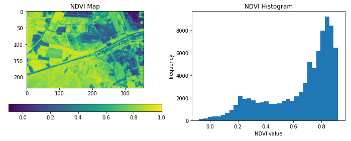

openEO Python Client#
Welcome to the documentation of openeo,
the official Python client library for interacting with openEO back-ends
to process remote sensing and Earth observation data.
It provides a Pythonic interface for the openEO API,
supporting data/process discovery, process graph building,
batch job management and much more.
Usage example#
A simple example, to give a feel of using this library:
import openeo
# Connect to openEO back-end.
connection = openeo.connect("openeo.vito.be").authenticate_oidc()
# Load data cube from TERRASCOPE_S2_NDVI_V2 collection.
cube = connection.load_collection(
"TERRASCOPE_S2_NDVI_V2",
spatial_extent={"west": 5.05, "south": 51.21, "east": 5.1, "north": 51.23},
temporal_extent=["2022-05-01", "2022-05-30"],
bands=["NDVI_10M"],
)
# Rescale digital number to physical values and take temporal maximum.
cube = cube.apply(lambda x: 0.004 * x - 0.08).max_time()
cube.download("ndvi-max.tiff")
